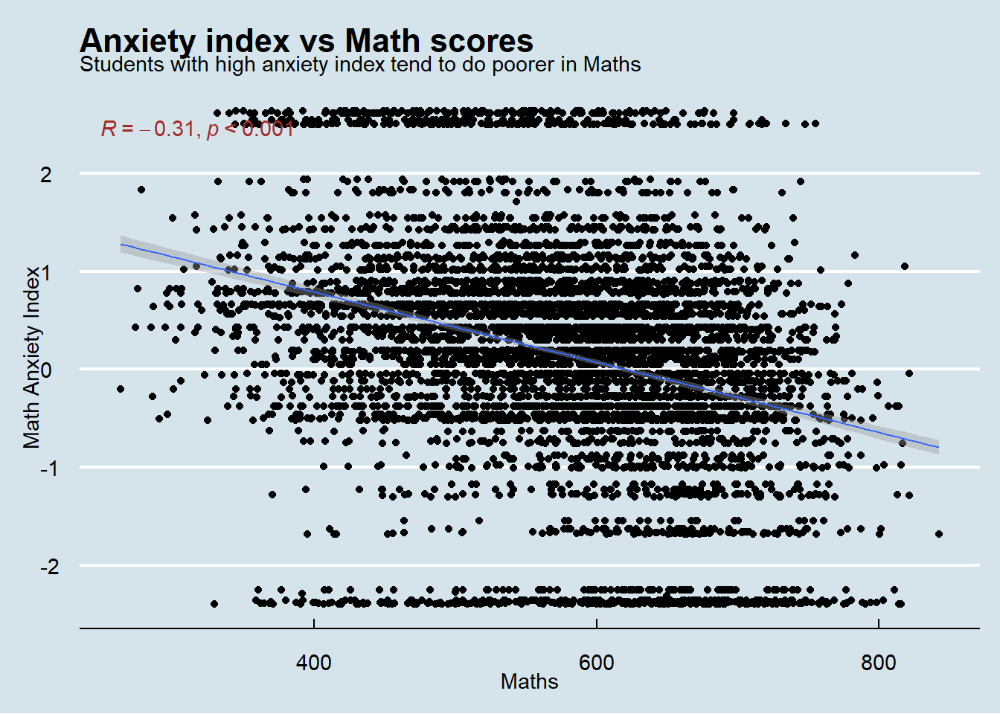
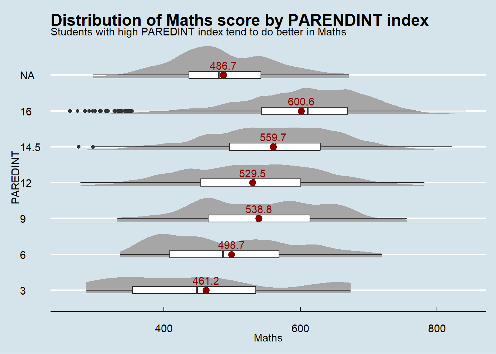

pacman::p_load(tidyverse, haven, dplyr, ggthemes, patchwork,
ggdist, plyr, ggpubr, ggridges, colorspace, reshape2)Take-home Exercise 1: PISA Singapore 2022
Setting the Scene
OECD education director Andreas Schleicher shared in a BBC article that “Singapore managed to achieve excellence without wide differences between children from wealthy and disadvantaged families.” (2016) Furthermore, several Ministers for Education from Singapore also started an “every school a good school” slogan. However, the general public strongly believes that there are disparities, especially between elite schools and neighborhood schools, between students from families with higher socioeconomic status and those with relatively lower socioeconomic status, and between immigrant and non-immigrant families.
The Task
The 2022 Programme for International Student Assessment (PISA) data was released on December 5, 2022. PISA global education survey every three years to assess the education systems worldwide by testing 15-year-old students in Mathematics, Reading, and Science.

We are tasked to use appropriate Exploratory Data Analysis (EDA) methods and ggplot2 functions to reveal:
the distribution of Singapore students’ performance in mathematics, reading, and science, and
the relationships between these performances with schools, gender, and socioeconomic status of these students.
1. Data Preparation
1.1 Installing R packages
The code below uses p_load() of the Pacman package to check if all the required packages are installed on the laptop. If they are, then they will be launched into the R environment.
1.2 Importing PISA data
The code chunk below uses read_sas() of haven to import PISA data into the R environment. Note that the code in this segment has the evaluation flag set to FALSE as the data file is big and we do not use it to reload this data again.
stu_qqq <- read_sas("data/cy08msp_stu_qqq.sas7bdat")As our task is focused on Singapore students, let’s filter the data by CNT = SGP. The data is then saved into another RDS file for easy loading of Singapore data later.
stu_qqq_SG <- stu_qqq %>%
filter(CNT == "SGP")
write_rds(stu_qqq_SG, "data/stu_qqq_SG.rds")1.3 Summary Statistics of Singapore PISA data
Let’s read the SG data and do some explorations
stu_qqq_SG <- read_rds("data/stu_qqq_SG.rds")
head(stu_qqq_SG, 5)# A tibble: 5 × 1,279
CNT CNTRYID CNTSCHID CNTSTUID CYC NatCen STRATUM SUBNATIO REGION OECD
<chr> <dbl> <dbl> <dbl> <chr> <chr> <chr> <chr> <dbl> <dbl>
1 SGP 702 70200052 70200001 08MS 070200 SGP01 7020000 70200 0
2 SGP 702 70200134 70200002 08MS 070200 SGP01 7020000 70200 0
3 SGP 702 70200112 70200003 08MS 070200 SGP01 7020000 70200 0
4 SGP 702 70200004 70200004 08MS 070200 SGP01 7020000 70200 0
5 SGP 702 70200152 70200005 08MS 070200 SGP01 7020000 70200 0
# ℹ 1,269 more variables: ADMINMODE <dbl>, LANGTEST_QQQ <dbl>,
# LANGTEST_COG <dbl>, LANGTEST_PAQ <dbl>, Option_CT <dbl>, Option_FL <dbl>,
# Option_ICTQ <dbl>, Option_WBQ <dbl>, Option_PQ <dbl>, Option_TQ <dbl>,
# Option_UH <dbl>, BOOKID <dbl>, ST001D01T <dbl>, ST003D02T <dbl>,
# ST003D03T <dbl>, ST004D01T <dbl>, ST250Q01JA <dbl>, ST250Q02JA <dbl>,
# ST250Q03JA <dbl>, ST250Q04JA <dbl>, ST250Q05JA <dbl>, ST250D06JA <chr>,
# ST250D07JA <chr>, ST251Q01JA <dbl>, ST251Q02JA <dbl>, ST251Q03JA <dbl>, …n_distinct(stu_qqq_SG$CNTSCHID)[1] 164What we know about the data:
There are 1279 columns with 6606 records.
Students are randomly picked from all 149 secondary schools and 15 private schools (total 164)
There are 10 plausible values for each subject (Maths, Reading, Science)
Students are classified into 3 immigrant statuses: Native, 1st generation and 2nd generation
Economic, Social and cultural status (ESCS) is calculated based on 3 indicators (highest parental occupation status, HISEI, highest education of parents in years, PAREDINT, and home possessions, HOMEPOS)
2. Data Wrangling
2.1 Changing data types of some columns
Some of the data types are not correct. For example, immigrant status (IMMIG), gender (ST004D01T), school ID (CNTSCHID), and highest parent education in years (PAREDINT) should be categorical instead of numerical.
stu_qqq_SG$IMMIG[stu_qqq_SG$IMMIG == 1] <- "Native"
stu_qqq_SG$IMMIG[stu_qqq_SG$IMMIG == 2] <- "1stGen"
stu_qqq_SG$IMMIG[stu_qqq_SG$IMMIG == 3] <- "2ndGen"
stu_qqq_SG$ST004D01T[stu_qqq_SG$ST004D01T == 1] <- "Female"
stu_qqq_SG$ST004D01T[stu_qqq_SG$ST004D01T == 2] <- "Male"
stu_qqq_SG$CNTSCHID <- as.factor(stu_qqq_SG$CNTSCHID)
stu_qqq_SG$PAREDINT <- as.factor(stu_qqq_SG$PAREDINT)2.2 Average scores of each subject
Let’s calculate the average of all ten plausible values of each subject and store them in the dataset.
stu_qqq_SG <- stu_qqq_SG %>%
mutate(Maths =
rowSums(stu_qqq_SG[paste0('PV', c(1:10), "MATH")],
na.rm = TRUE)/10) %>%
mutate(Reading =
rowSums(stu_qqq_SG[paste0('PV', c(1:10), "READ")],
na.rm = TRUE)/10) %>%
mutate(Science =
rowSums(stu_qqq_SG[paste0('PV', c(1:10), "SCIE")],
na.rm = TRUE)/10)Let’s take a look at the spread of each subject’s scores:
# Melt the data first
temp_Data <- stu_qqq_SG[, c("Maths", "Science", "Reading")]
temp_Data <- melt(temp_Data, variable.name = "Subject")
ggplot(temp_Data, aes(x = value, y = Subject)) +
stat_halfeye(aes(fill = Subject),
adjust = 0.5,
justification = 0.1,
.width = 0,
point_colour = NA) +
geom_boxplot(width = 0.2) +
stat_summary(fun = mean, geom = "point", shape = 16,
size = 3, color = "darkred",
position = position_nudge(x = 0.0)) +
stat_summary(fun.y = mean, colour="darkred",
geom = "text", show_guide = FALSE,
vjust = -0.7, aes( label=round(after_stat(x), 1))) +
labs(y = NULL, x = "scores",
title = "Distribution of scores",
subtitle = "Students tend to do better in Maths as compared to Reading and Science") +
theme_economist()+
theme(legend.position = "none")
Observation
Students did better in Maths, followed by Science and then Reading.
2.3 Immigrant vs non-immigrant students
Let’s take a look at the proportion of immigrant (1st Generation and 2nd Generation) vs non-immigrant (native) students. Rows with ‘NA’ responses for immigrant status are removed in this plot.
stu_immigrant <- stu_qqq_SG %>% drop_na(IMMIG)
ggplot(data = stu_immigrant, aes(x= IMMIG, fill = IMMIG)) +
scale_fill_manual(values = c("lightgreen", "orange", "lightblue")) +
geom_bar() +
ylim(0, 4700) +
geom_text(aes(label = paste0(after_stat(count), ", ",
round(after_stat(count)/sum(after_stat(count))*100, 1), "%")),
stat = "count", vjust = -0.5, colour = "brown") +
labs(x = "Immigrant status",
title = "Distribution of immigrant statuses",
subtitle = "72% of the students are native")
Observation
The majority of the students are native whereas about 27% of the students are 1st or 2nd generation immigrants.
2.4 Gender distribution
Let’s find out the proportion of female vs male students.
percentage_data <- as.data.frame(table(stu_qqq_SG$ST004D01T))
colnames(percentage_data)[1] <- "Gender"
percentage_data <- percentage_data %>%
mutate(percentage = Freq / sum(Freq) * 100)
ggplot(percentage_data, aes(x = "", y = Freq, fill = Gender)) +
geom_bar(stat = "identity", width = 1) +
coord_polar(theta = "y") +
theme_void() +
scale_fill_manual(values = c("#66c2a5", "#fc8d62")) +
theme(legend.position = "right") +
geom_text(aes(label = paste0(sprintf("%.1f", percentage), "%")),
position = position_stack(vjust = 0.5)) +
labs(title = "Gender distribution")
Observation
The proportion of male and female students are quite similar, with male having slightly over 50%.
2.5 Socioeconomic distribution
PISA index of economic, social and cultural status (ESCS) is used to distinguish between socio-economically disadvantaged students and socio-economically advantaged students. Socio-economic status is thus a measure of students’ access to family resources (financial capital, social capital, cultural capital and human capital) and the social position of the student’s family/household.
ggplot(data = stu_qqq_SG, aes(x = ESCS)) +
stat_halfeye(adjust = 0.5,
justification = -0.2,
.width = 0, point_colour = NA) +
geom_boxplot(width = 0.20,
outlier.shape = NA) +
labs(y = NULL,
title = "Distribution of socio-economic index") +
theme_economist()ggplot(stu_immigrant, aes(x = IMMIG, y = ESCS)) +
stat_halfeye(aes(fill = IMMIG), adjust = 0.5,
justification = 0.1,
.width = 0,
point_colour = NA) +
scale_fill_manual(values = c("pink", "lightgreen", "lightblue")) +
geom_boxplot(width = 0.2) +
coord_flip() +
theme_economist()+
stat_summary(fun = mean, geom = "point", shape = 16,
size = 3, color = "darkred",
position = position_nudge(x = 0.0)) +
stat_summary(fun.y = mean, colour="darkred",
geom = "text", show_guide = FALSE,
vjust = -0.7, aes( label=round(after_stat(y), 1))) +
labs(x =NULL,
title = "Distribution of ESCS by immigrant status",
subtitle = "Non-native students tends to have a higher ESCS index") +
theme(legend.position = "none")
Observations
On average, the ESCS index for Singaporean students is above 0.
ESCS index is slighty higher for non-native students as compared to the natives.
3. Exploratory Data Analysis
3.1 Immigrant vs Native Students
Explore if non-native students did better in any of the subjects as compared to native students.
meanScore1 <- ddply(stu_immigrant, "IMMIG", summarise,
grp.mean = mean(Maths))
ggplot(stu_immigrant, aes(x = Maths, fill = IMMIG)) +
scale_fill_manual(values = c("pink", "lightgreen", "lightblue")) +
geom_density(alpha = 0.5) +
geom_vline(data = meanScore1,
aes(xintercept = grp.mean, color = IMMIG),
linetype = "dashed", size = 1) +
labs(y = NULL,
title = "Distribution of Maths scores by immigrant status",
subtitle = "1st Generation students tend to score higher in Maths") +
theme_economist() +
theme(legend.position = "right")meanScore2 <- ddply(stu_immigrant, "IMMIG", summarise,
grp.mean = mean(Reading))
ggplot(stu_immigrant, aes(x = Reading, fill = IMMIG)) +
scale_fill_manual(values = c("pink", "lightgreen", "lightblue")) +
geom_density(alpha = 0.5) +
geom_vline(data = meanScore2,
aes(xintercept = grp.mean, color = IMMIG),
linetype = "dashed", size = 1) +
labs(y = NULL,
title = "Distribution of Reading scores by immigrant status",
subtitle = "1st Generation students tend to score higher in Reading")+
theme_economist() +
theme(legend.position = "right")meanScore3 <- ddply(stu_immigrant, "IMMIG", summarise,
grp.mean = mean(Science))
ggplot(stu_immigrant, aes(x = Science, fill = IMMIG)) +
scale_fill_manual(values = c("pink", "lightgreen", "lightblue")) +
geom_density(alpha = 0.5) +
geom_vline(data = meanScore3,
aes(xintercept = grp.mean, color = IMMIG),
linetype = "dashed", size = 1) +
labs(y = NULL,
title = "Distribution of Science scores by immigrant status",
subtitle = "1st Generation students tend to score higher in Science")+
theme_economist() +
theme(legend.position = "right")
Observation
From the graphs above, 1stGen students did better in all 3 subjects as compared to 2ndGen and native students.
3.2 Correlation between anxiety in Maths and Maths performance
Research has shown that anxiety in students affects their performances in examinations or tests, especially in Maths. Let’s plot a scatter chart to visualise this relationship.
ggplot(data = stu_qqq_SG, aes(x = Maths, y = ANXMAT)) +
geom_point() +
geom_smooth(method = lm, linewidth = 0.5) +
stat_cor(label.x.npc="left", hjust = 0.1,
p.accuracy = 0.001, r.accuracy = 0.01, color = "brown") +
theme_economist() +
labs(y = "Math Anxiety Index",
title = "Anxiety index vs Math scores",
subtitle = "Students with high anxiety index tend to do poorer in Maths")
Observation
From the scatter plot above, we can see that there is a slight negative correlation (r = -0.31) between the anxiety index and Maths scores. This means that students with anxiety (index > 0) tend to do poorer in Maths.
3.3 Gender Performance Variations
Let’s see how female versus male students perform in the 3 subjects.
ggplot(stu_qqq_SG, aes(x = ST004D01T, y = Maths)) +
stat_halfeye(adjust = 0.5, aes(fill = ST004D01T),
justification = 0.1,
.width = 0,
point_colour = NA) +
geom_boxplot(width = 0.2) +
scale_fill_manual(name = "Gender", values = c("#66c2a5", "#fc8d62")) +
coord_flip() +
stat_summary(fun = mean, geom = "point", shape = 16,
size = 3, color = "darkred",
position = position_nudge(x = 0.0)) +
stat_summary(fun.y = mean, colour="darkred",
geom = "text", show_guide = FALSE,
vjust = -0.7, aes( label=round(after_stat(y), 1))) +
theme_economist()+
labs(x = NULL,
title = "Distribution of Maths scores by Gender",
subtitle = "Male students tend to do better in Maths than female students") +
theme(legend.position = "right")
ggplot(stu_qqq_SG, aes(x = ST004D01T, y = Reading)) +
stat_halfeye(adjust = 0.5, aes(fill = ST004D01T),
justification = 0.1,
.width = 0,
point_colour = NA) +
geom_boxplot(width = 0.2) +
scale_fill_manual(name = "Gender", values = c("#66c2a5", "#fc8d62")) +
coord_flip() +
stat_summary(fun = mean, geom = "point", shape = 16,
size = 3, color = "darkred",
position = position_nudge(x = 0.0)) +
stat_summary(fun.y = mean, colour="darkred",
geom = "text", show_guide = FALSE,
vjust = -0.7, aes( label=round(after_stat(y), 1))) +
theme_economist()+
labs(x = NULL,
title = "Distribution of Reading scores by Gender",
subtitle = "Female students tend to do better in Reading than male students") +
theme(legend.position = "right")ggplot(stu_qqq_SG, aes(x = ST004D01T, y = Science)) +
stat_halfeye(adjust = 0.5, aes(fill = ST004D01T),
justification = 0.1,
.width = 0,
point_colour = NA) +
geom_boxplot(width = 0.2) +
scale_fill_manual(name = "Gender", values = c("#66c2a5", "#fc8d62")) +
coord_flip() +
stat_summary(fun = mean, geom = "point", shape = 16,
size = 3, color = "darkred",
position = position_nudge(x = 0.0)) +
stat_summary(fun.y = mean, colour="darkred",
geom = "text", show_guide = FALSE,
vjust = -0.7, aes( label=round(after_stat(y), 1))) +
theme_economist()+
labs(x = NULL,
title = "Distribution of Science scores by Gender",
subtitle = "Male students tend to do better in Science than female students") +
theme(legend.position = "right")
Observation
Male students seem to perform better in Maths as compared to female students. However, female students did better in Reading than male students.
3.4 Socio-Economic status (ESCS) affects students’ performance
Let’s see how socio-economic status may affect students performance in the 3 subjects.
p1 <- ggplot(data = stu_qqq_SG, aes(x = Maths, y = ESCS)) +
geom_point() +
geom_smooth(method = lm, size = 0.5) +
stat_cor(p.accuracy = 0.001, r.accuracy = 0.01, color = "brown")
p2 <- ggplot(data = stu_qqq_SG, aes(x = Reading, y = ESCS)) +
geom_point() +
geom_smooth(method = lm, size = 0.5) +
stat_cor(p.accuracy = 0.001, r.accuracy = 0.01, color = "brown")
p3 <- ggplot(data = stu_qqq_SG, aes(x = Science, y = ESCS)) +
geom_point() +
geom_smooth(method = lm, size = 0.5) +
stat_cor(p.accuracy = 0.001, r.accuracy = 0.01, color = "brown")
(p1 +theme_economist() |
p2 + theme_economist() |
p3 + theme_economist()) +
plot_annotation("ESCS index vs subject scores")ggplot(data = stu_qqq_SG, aes(x = Maths, y = HISEI)) +
geom_point() +
geom_smooth(method = lm, size = 0.5) +
stat_cor(p.accuracy = 0.001, r.accuracy = 0.01, color = "brown") +
labs(title = "Highest Parent Occupation Status vs Maths scores",
subtitle = "Students with high HISEI index tend to do better in Maths") +
theme_economist()PAREDINT should be a categorical data, hence let’s convert it to categorical.
ggplot(stu_qqq_SG, aes(x = PAREDINT, y = Maths)) +
stat_halfeye(adjust = 0.5,
justification = 0.1,
.width = 0,
point_colour = NA) +
geom_boxplot(width = 0.2) +
coord_flip() +
stat_summary(fun = mean, geom = "point", shape = 16,
size = 3, color = "darkred",
position = position_nudge(x = 0.0)) +
stat_summary(fun.y = mean, colour="darkred",
geom = "text", show_guide = FALSE,
vjust = -0.7, aes( label=round(after_stat(y), 1))) +
theme_economist()+
labs(title = "Distribution of Maths score by PARENDINT index",
subtitle = "Students with high PAREDINT index tend to do better in Maths") 
ggplot(data = stu_qqq_SG, aes(x = Maths, y = HOMEPOS)) +
geom_point() +
geom_smooth(method = lm, size = 0.5) +
stat_cor(p.accuracy = 0.001, r.accuracy = 0.01, color = "brown") +
labs(title = "Home-possession index vs Maths scores",
subtitle = "Students with high HOMEPOS index tend to do better in Maths") +
theme_economist()
Observation
ESCS: These 3 scatter plots consistently show that there is a positive correlation between ESCS index and subject scores with a coefficient of 0.44.
HISEI: There is a positive correlation (0.34) of HISEI index and Maths score.
PARENINT: Students whose parent’s highest education in years is high tends to score better in Maths
HOMEPOS: There is a positive correlation (0.34) of HOMEPOS index and Maths score.
3.5 School performances
It is tough to compare the students’ performance among all 164 schools. Hence, let’s focus on the top 75 percentile and bottom 25 percentile students and identify the top 15 schools with the most number of students.
quantile75Score <- quantile(stu_qqq_SG$Maths, 0.75)
MTop75 <- filter(stu_qqq_SG, Maths >= quantile75Score)
MTop75 <- count(MTop75$CNTSCHID)
names(MTop75) <- c("SchoolID", "StudentCount")
MTop75 <- MTop75 %>%
arrange(desc(StudentCount)) %>%
slice_head(n = 10)
MTop75$SchoolID <- factor (MTop75$SchoolID,
levels = MTop75$SchoolID[order (MTop75$StudentCount, decreasing = FALSE)])
quantile25Score <- quantile(stu_qqq_SG$Maths, 0.25)
MBottom25 <- filter(stu_qqq_SG, Maths <= quantile25Score)
MBottom25 <- count(MBottom25$CNTSCHID)
names(MBottom25) <- c("SchoolID", "StudentCount")
MBottom25 <- MBottom25 %>%
arrange(desc(StudentCount)) %>%
slice_head(n = 10)
MBottom25$SchoolID <- factor (MBottom25$SchoolID,
levels = MBottom25$SchoolID[order (MBottom25$StudentCount, decreasing = FALSE)])
p1 <- ggplot(MTop75,
aes(x= SchoolID, y = StudentCount)) +
geom_col() +
coord_flip() +
labs(title = "10 Schools with the most number of students scoring above 75 percentile in Maths") +
theme_economist() +
theme(plot.title = element_text(size = 10, face = "bold", hjust = 1)) +
theme(axis.text = element_text(size = 7))
p2 <- ggplot(MBottom25,
aes(x= SchoolID, y = StudentCount)) +
geom_col() +
coord_flip() +
labs(title = "10 Schools with the most number of students scoring below 25 percentile in Maths") +
theme_economist() +
theme(plot.title = element_text(size = 10, face = "bold", hjust = 1)) +
theme(axis.text = element_text(size = 7))
(p1 / p2) quantile75Score <- quantile(stu_qqq_SG$Reading, 0.75)
RTop75 <- filter(stu_qqq_SG, Reading >= quantile75Score)
RTop75 <- count(RTop75$CNTSCHID)
names(RTop75) <- c("SchoolID", "StudentCount")
RTop75 <- RTop75 %>%
arrange(desc(StudentCount)) %>%
slice_head(n = 10)
RTop75$SchoolID <- factor (RTop75$SchoolID,
levels = RTop75$SchoolID[order (RTop75$StudentCount, decreasing = FALSE)])
quantile25Score <- quantile(stu_qqq_SG$Reading, 0.25)
RBottom25 <- filter(stu_qqq_SG, Reading <= quantile25Score)
RBottom25 <- count(RBottom25$CNTSCHID)
names(RBottom25) <- c("SchoolID", "StudentCount")
RBottom25 <- RBottom25 %>%
arrange(desc(StudentCount)) %>%
slice_head(n = 10)
RBottom25$SchoolID <- factor (RBottom25$SchoolID,
levels = RBottom25$SchoolID[order (RBottom25$StudentCount, decreasing = FALSE)])
p1 <- ggplot(RTop75,
aes(x= SchoolID, y = StudentCount)) +
geom_col() +
coord_flip() +
labs(title = "10 Schools with the most number of students scoring above 75 percentile in Reading") +
theme_economist() +
theme(plot.title = element_text(size = 10,
face = "bold", hjust = 1)) +
theme(axis.text = element_text(size = 7))
p2 <- ggplot(RBottom25,
aes(x= SchoolID, y = StudentCount)) +
geom_col() +
coord_flip() +
labs(title = "10 Schools with the most number of students scoring below 25 percentile in Reading") +
theme_economist() +
theme(plot.title = element_text(size = 10,
face = "bold", hjust = 1)) +
theme(axis.text = element_text(size = 7))
(p1 / p2)quantile75Score <- quantile(stu_qqq_SG$Science, 0.75)
STop75 <- filter(stu_qqq_SG, Science >= quantile75Score)
STop75 <- count(STop75$CNTSCHID)
names(STop75) <- c("SchoolID", "StudentCount")
STop75 <- STop75 %>%
arrange(desc(StudentCount)) %>%
slice_head(n = 10)
STop75$SchoolID <- factor (STop75$SchoolID,
levels = STop75$SchoolID[order (STop75$StudentCount, decreasing = FALSE)])
quantile25Score <- quantile(stu_qqq_SG$Science, 0.25)
SBottom25 <- filter(stu_qqq_SG, Science <= quantile25Score)
SBottom25 <- count(SBottom25$CNTSCHID)
names(SBottom25) <- c("SchoolID", "StudentCount")
SBottom25 <- SBottom25 %>%
arrange(desc(StudentCount)) %>%
slice_head(n = 10)
SBottom25$SchoolID <- factor (SBottom25$SchoolID,
levels = SBottom25$SchoolID[order (SBottom25$StudentCount, decreasing = FALSE)])
p1 <- ggplot(STop75,
aes(x= SchoolID, y = StudentCount)) +
geom_col() +
coord_flip() +
labs(title = "10 Schools with the most number of students scoring above 75 percentile in Science") +
theme_economist() +
theme(plot.title = element_text(size = 10,
face = "bold", hjust = 1)) +
theme(axis.text = element_text(size = 7))
p2 <- ggplot(SBottom25,
aes(x= SchoolID, y = StudentCount)) +
geom_col() +
coord_flip() +
labs(title = "10 Schools with the most number of students scoring below 25 percentile in Science") +
theme_economist() +
theme(plot.title = element_text(size = 10,
face = "bold", hjust = 1)) +
theme(axis.text = element_text(size = 7))
(p1 / p2)
Observations
The number of students who did well differs among schools.
School 70200001 has the most number of students scoring in the top 75 percentile range in Maths and Science. Similarly, School 70200115 has the most number of students scoring in the bottom 25 percentile range in both Maths and Science.
4. Conclusion
Besides the observations/insights mentioned above after each plot, there are some notes for users:
Incomplete data: Some of the responses are not completed, for example there are about 236 students who did not answer their immigrant status.
Scatter plots are used to determine if there is any correlation between 2 variables. However, this does not mean causation. For example, we can see that if the home posession index (HOMEPOS) increases, the Maths score tends to be higher. But this does not mean that HOMEPOS causes the students to do better in Maths.